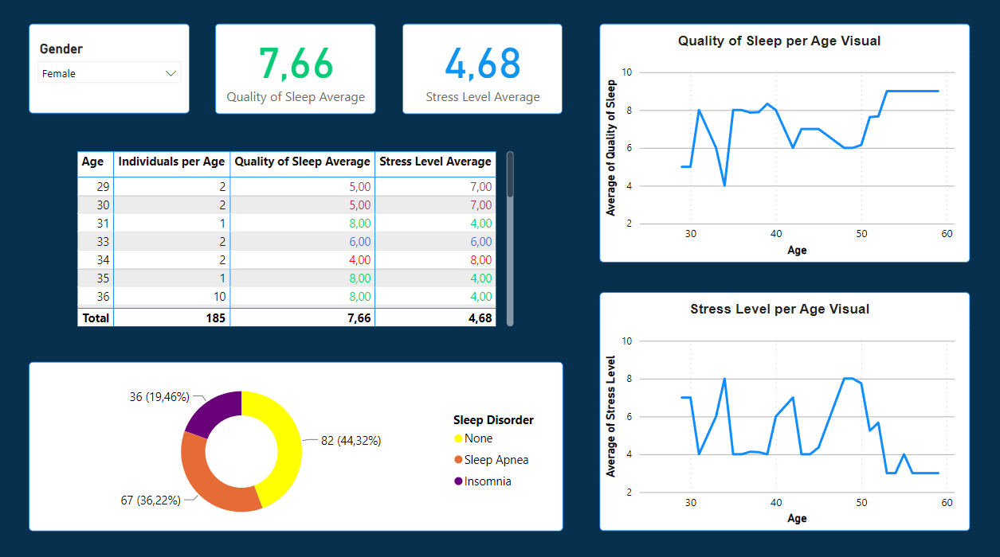
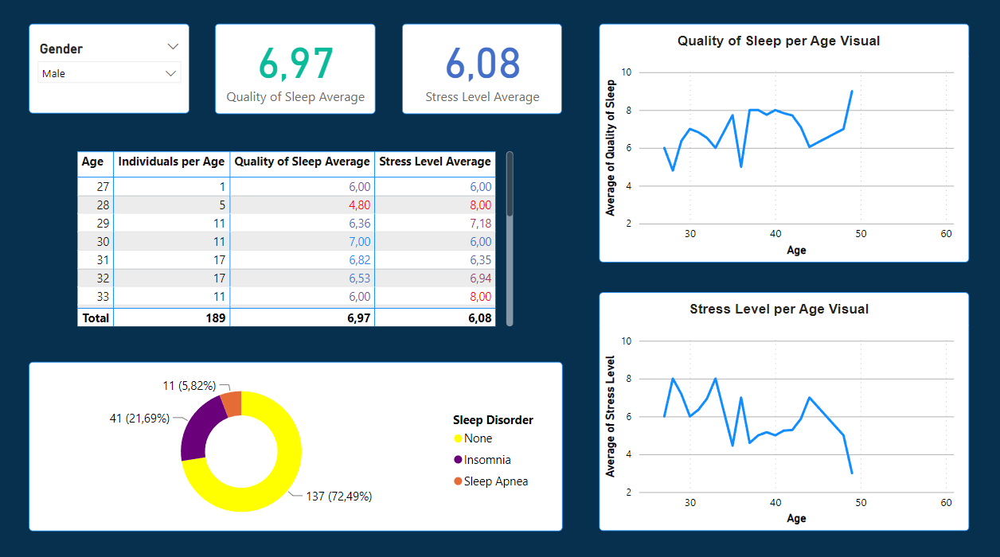

The dataset covers a wide range of variables related to sleep and daily habits. It includes details such as gender, age, occupation, quality of sleep, stress levels, Body Mass Index categories, blood pressure, heart rate and the presence or absence of sleep disorders.
This project contains:
- Data exploration
- Data cleaning and transformation
- Data modeling
- DAX formula language
- Data visualization
- Analysis of results
The objective is to better understand the sleep habits of the population and provide useful information to improve the health and overall well-being of individuals.
By analyzing variables such as age, sleep quality, stress levels and sleep disorders; the aim is to identify significant correlations and gain insights that can be used to develop strategies and recommendations for improving and promoting healthier habits.
Key features of the dataset:
- Comprehensive sleep metrics: explore sleep duration, quality and factors influencing sleep patterns.
- Lifestyle factors: analyze physical activity levels, stress levels and BMI categories.
- Cardiovascular health: examine blood pressure and heart rate measurements.
- Sleep disorder analysis: identify the occurrence of sleep disorders such as Insomnia and Sleep Apnea.
Details about columns:
- Person ID: an identifier for each individual.
- Gender: gender of the person (Male/Female).
- Age: age of the person in years.
- Occupation: occupation or profession of the person.
- Sleep Duration: number of hours the person sleeps per day.
- Quality of Sleep: a subjective rating of the quality of sleep, ranging from 1 to 10.
- Physical Activity Level: number of minutes the person engages in physical activity daily.
- Stress Level: a subjective rating of the stress level experienced by the person, ranging from 1 to 10.
- BMI Category: For adults, BMI is interpreted using standard weight status categories. These categories are the same for men and women of all body types and ages:
- Underweight: 124 lbs or less (BMI below 18.5)
- Healthy Weight: 125 lbs to 168 lbs (BMI 18.5 to 24.9)
- Overweight: 169 lbs to 202 lbs (BMI 25.0 to 29.9)
- Obesity: 203 lbs or more (BMI 30 or higher)
- Blood Pressure: blood pressure measurement of the person, indicated as systolic pressure over diastolic pressure.
- Heart Rate: the resting heart rate of the person in beats per minute (bpm).
- Daily Steps: number of steps the person takes per day.
- Sleep Disorder: presence or absence of a sleep disorder in the person:
- None: the individual does not exhibit any specific sleep disorder
- Insomnia: the individual experiences difficulty falling asleep or staying asleep, leading to inadequate or poor-quality sleep
- Sleep Apnea: the individual suffers from pauses in breathing during sleep, resulting in disrupted sleep patterns and potential health risks


The features of Age, Quality of Sleep, Stress Levels and Sleep Disorders were included to analyze the variations according to the gender of individuals, through pie charts and line graphs.
Results:
- Sleep quality increases and stress levels decrease starting at the age of 50.
- Women tend to suffer from sleep apnea more than men.
- Most men usually do not present sleep disorders despite having lower sleep quality compared to women.
- Men have a higher average in terms of stress levels.
Interpretation of Results:
- There seems to be a trend related to Quality of Sleep and Stress Levels as people age. From the age of 50 onwards, there is an increase in Quality of Sleep and a decrease in Stress levels. This may be associated with lifestyle changes, stress management or other factors linked to aging.
- There is a significant difference between men and women regarding the prevalence of Sleep Apnea. On average, women tend to suffer from this disorder more than men. This difference could be related to biological differences, such as the anatomy of the respiratory system.
- Although men have lower sleep quality compared to women, it seems that the majority of them do not usually experience sleep disorders. This suggests that men may be less likely to develop specific sleep disorders compared to women.
- Men exhibit a higher average in stress levels compared to women. This difference in stress levels between genders could be influenced by a variety of factors, such as biological, social or lifestyle differences.
Recommendations:
- Conduct an evaluation of Sleep Apnea in the female population. Healthcare professionals can provide specific assessments to detect sleep apnea in women, which may help improve the early diagnosis and treatment of this disorder.
- It is important to employ effective stress management techniques in people of all ages. This may include information on healthy sleep habits, relaxation techniques and strategies for managing daily stress.
References:
You can visit the GitHub repository for more information on the documents used in the project.